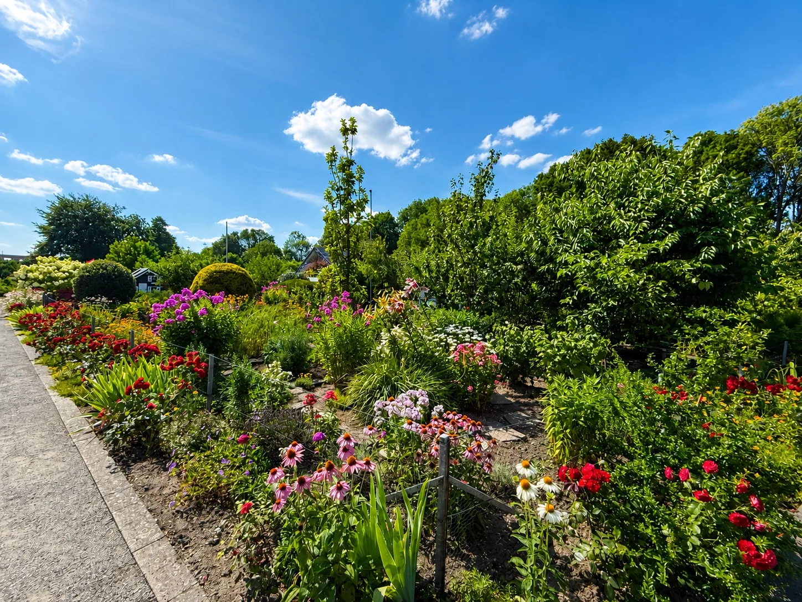
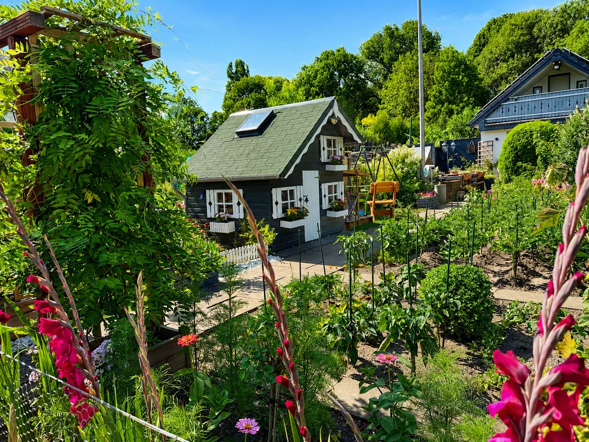
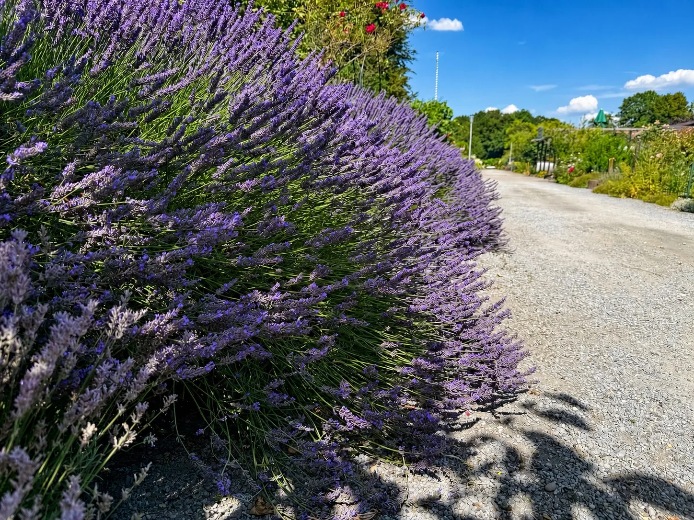

Gartenkultur
Obst, Gemüse, Kräuter und Blumen – fachgerecht, vielfältig und mit Blick auf morgen.
Kleingärtnerverein · Mönchengladbach
105 Jahre Gartenkultur, Gemeinschaft und Natur in Mönchengladbach.

Tradition seit 1921 – getragen von Generationen.
Vielfalt, die wächst – jeder Garten ein Zuhause.
Verwurzelt in unserer Stadt – engagiert für Natur und Gemeinschaft.
Unser Verein
Die Rohrmühle ist mehr als eine Ansammlung von Parzellen. Sie ist ein öffentlicher Grünraum, ein Treffpunkt der Generationen und ein Stück lebendige Mönchengladbacher Stadtgeschichte.
Was 1921 auch als Hilfe zur Selbstversorgung begann, ist heute ein Ort für naturnahes Gärtnern, Erholung, Begegnung und gemeinsames Engagement. Mitglieder unterschiedlicher Herkunft verbindet hier dieselbe Freude: säen, pflegen, ernten und Verantwortung übernehmen.
Obst, Gemüse, Kräuter und Blumen – fachgerecht, vielfältig und mit Blick auf morgen.
Gemeinsame Arbeit, gegenseitige Hilfe und ein Verein, in dem Jung und Alt ihren Platz finden.
Biotop, Lehrgarten, Blühflächen und Lebensräume für Insekten, Vögel und andere Gartengäste.
Unsere Chronik
Mehr als ein Jahrhundert Vereinsgeschichte – geprägt von Aufbau, Eigenleistung und dem Willen, etwas Bleibendes zu schaffen.
Die Namen der Gründer sind nicht überliefert. Der Verein entsteht in einer Zeit, in der Kleingärten für viele Familien auch Versorgung und Sicherheit bedeuten.
Der Verein löst sich aus der bäuerlichen Genossenschaft und zählt zu dieser Zeit 50 Mitglieder.
Unter dem Namen „Kleingärtnerverein Rohrmühle“ erhält die Gemeinschaft ihre bis heute prägende vereinsrechtliche Form.
Nach dem Beschluss von 1968 entsteht in gemeinsamer Arbeit ein dauerhafter Mittelpunkt des Vereinslebens.
Die Anlage wächst um fünf Gärten. Ein Kinderspielplatz entsteht, anschließend werden nach und nach alle Parzellen mit Strom versorgt.
2. Platz im Anlagenwettbewerb, 2. Platz für Kinderfreundlichkeit und 3. Platz für Umweltfreundlichkeit.
Mit einem Festwochenende vom 8. bis 10. Juni feiert der Verein sein Jubiläum. Die Festschrift dokumentiert 52 Gärten und 54 Mitglieder.
Beim 74. Mönchengladbacher Kleingartenwettbewerb erreicht die Rohrmühle den 1. Platz der Gruppe C und steigt auf.
Die nächste Generation übernimmt Verantwortung für Pflege, Gemeinschaft, Ökologie und die Zukunft der Anlage.
Unsere Anlage
Die Rohrmühle verbindet private Gartenfreude mit gemeinschaftlichen Flächen, die Besuchern, Familien und der Natur zugutekommen.

Seit 1972 Mittelpunkt für Versammlungen, Begegnung und gemeinsames Vereinsleben.
1975 angelegt und später erweitert – ein fester Bestandteil unserer kinderfreundlichen Tradition.
Orte für Umweltbildung, Artenvielfalt und praktisches Wissen rund um naturnahes Gärtnern.

Ökologie
Kleingärten sind Rückzugsräume für Menschen und Tiere. Mit heimischen Pflanzen, lebendigem Boden, sparsamer Wassernutzung und vielfältigen Strukturen leisten wir einen Beitrag zum Stadtklima und zur Artenvielfalt.
Impressionen
Ein Blick auf gepflegte Wege, vielfältige Gärten, gemeinschaftliche Orte und die kleinen Details, die unsere Anlage besonders machen.
Aktuelles & Entwicklung
123,25 Punkte und ein sichtbares Zeichen dafür, was gemeinsames Engagement bewegen kann.
Wir bewahren unsere Geschichte und richten den Blick gleichzeitig auf die nächste Generation.
Termine und wichtige Informationen werden rechtzeitig über Aushang und Vereinskanäle bekanntgegeben.
Garteninteresse
Ob aktuell eine Parzelle frei ist, erfährst du direkt über den Verein. Schreib uns kurz, wer du bist und was dich am Kleingärtnern begeistert.
Garteninteresse sendenKontakt
Fragen zum Verein, zur Anlage oder zu einer möglichen Parzelle? Wir freuen uns auf deine Nachricht.
Rechtliche Angaben
E-Mail: KVGFMG2KGV05@KVGartenfreunde-mg.de
Vertreten durch den vertretungsberechtigten Vorstand. Die Namen des aktuellen Vorstands, das zuständige Registergericht und die Vereinsregisternummer werden nach Bestätigung durch den Verein ergänzt.
Hinweis: Diese Angaben müssen vom Verein mit den aktuellen Register- und Vorstandsdaten geprüft und vervollständigt werden.
Datenschutzhinweise
Beim Aufruf einer Website werden technisch notwendige Verbindungsdaten an den Hostinganbieter übertragen. Die Verarbeitung dient dem sicheren und stabilen Betrieb. Technischer Hostinganbieter dieser Ausgabe ist GitHub Pages.
Diese Website setzt selbst keine Analysewerkzeuge, Werbetracker oder Marketing-Cookies ein. Es gibt kein Kontaktformular.
Links zum Kreisverband, zu Google Maps und zu anderen externen Angeboten werden erst beim Anklicken aufgerufen. Ab diesem Zeitpunkt gelten die Datenschutzbestimmungen des jeweiligen Anbieters.
Arbeitsstand: Der Verein sollte diese Hinweise vor der endgültigen öffentlichen Freischaltung anhand seiner tatsächlichen Abläufe rechtlich prüfen lassen.